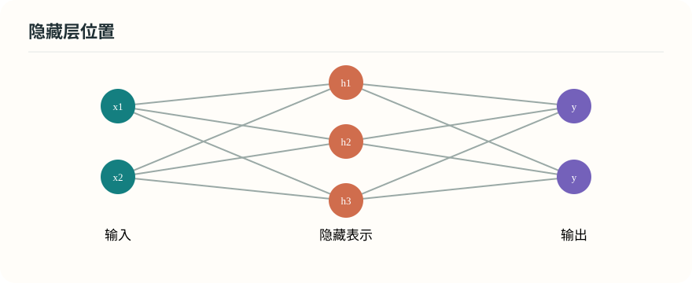
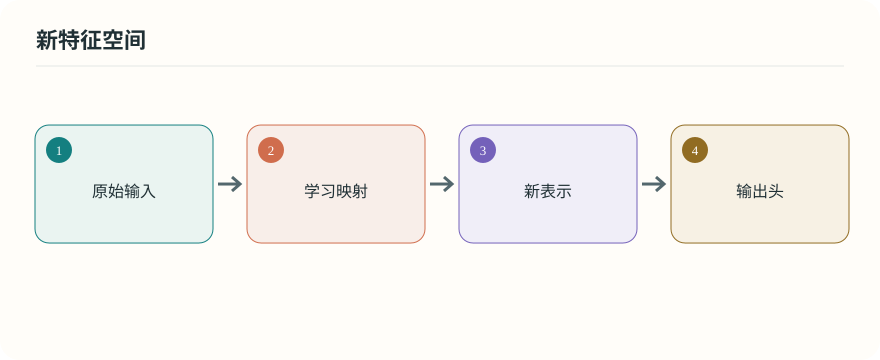
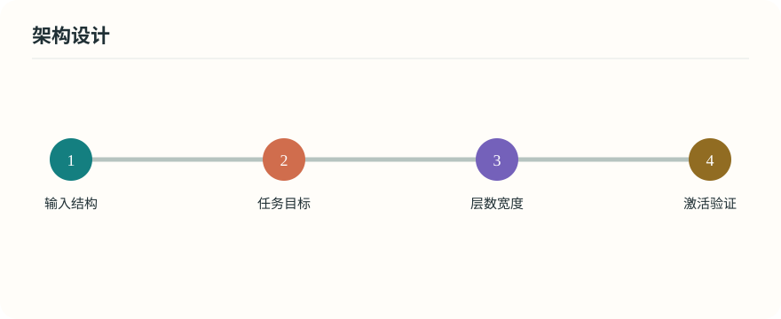

深度前馈网络 · MODULE 05
隐藏单元：网络如何学习特征
隐藏层不是黑箱里的神秘神经元，而是可学习的中间表示。
隐藏层把原始输入转换成更适合当前任务的特征，再交给后续层组合。
核心问题
隐藏层把原始输入转换成更适合当前任务的特征，再交给后续层组合。
1. 为什么叫隐藏层
训练数据直接给出输入 x 与目标 y，却没有逐层标注隐藏单元应该输出什么。隐藏表示由学习算法和参数共同形成。

2. 仿射变换加激活
每个隐藏单元先对输入加权求和并加偏置，再通过激活函数。多个单元并行组合成一个向量表示。
3. 没有非线性，多层仍是仿射
两个仿射变换连续组合，仍可合并为一个仿射变换。无论堆叠多少层，没有非线性就没有更复杂的函数族。
4. 学习特征空间
隐藏层把输入映射到新表示空间，再由输出层完成区分。XOR 例子展示了原空间不可线性分离的点，如何通过隐藏表示变得可分。

5. 宽度与深度
宽度控制同一层并行特征数，深度控制逐层组合。两者都会改变表达能力、参数量、计算成本与优化难度，没有对所有任务成立的简单优劣。
6. 隐藏层与输出层不同
隐藏层构造表示，输出层参数化目标。隐藏层可用 ReLU、GELU 或 tanh；输出层由回归、二分类、多分类等目标决定。
7. 架构设计从简单基线开始
先明确输入结构、任务目标和输出维度，再选择层数、宽度、激活函数与参数共享。一次只改变一个关键因素，才能归因实验结果。

8. 激活可视化不是语义证明
一个隐藏单元对某些输入响应较强，不足以证明它代表一个自然语言概念或视觉对象。解释隐藏表示需要额外实验，不能只凭热图贴标签。
交互实验
改变激活函数，比较同一仿射输入的表示。
改变激活函数，比较同一仿射输入的表示。
交互用于核对公式与数值关系；不是完整训练基准。
可运行示例
import torch
import torch.nn.functional as F
x=torch.tensor([[-1.0,.5,2.0]])
W=torch.tensor([[1.,-.5],[.2,1.],[-1.,.3]])
h=F.relu(x@W)
print(h)参考资料
教材结论、论文结论与本页推导分别标注；图示为独立绘制。